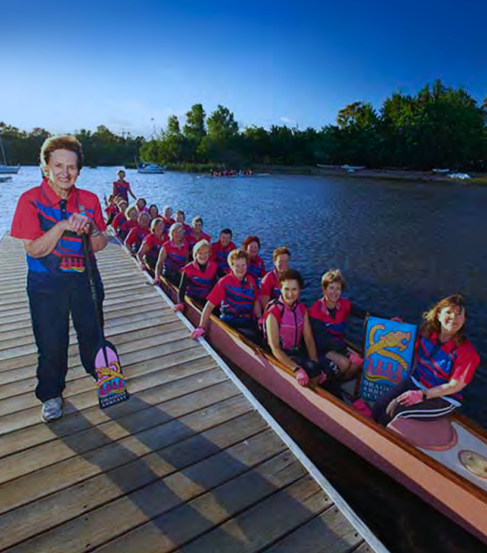
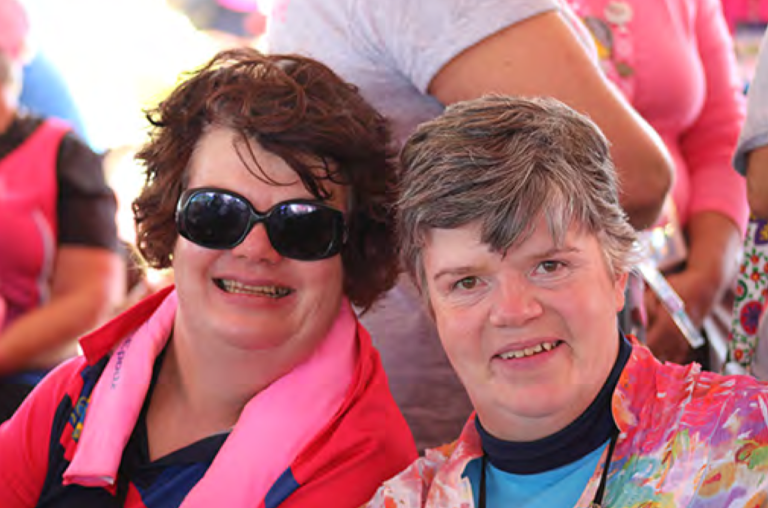

Tickled pink and warriors afire
July 2, 2018
Next year, the ACT is hosting the National Dragon Boat Championships, with crews coming from all over Australia to compete. Learn about the teams we have to offer.
Our charming Lake Burley Griffin is an important part of Canberra, it brings people together in many unexpected ways. Dragon Boating is one of these.
What is dragon boating, you may ask? Let's find out how the world celebrates dragon boating in the video below.
One of our treasures is the Dragons Abreast GoAnna crew, a sporting home to breast cancer survivors named in honour of founder and matriarch, Anna Wellings-Booth.
Anna is widely admired. Not only for the significant contribution she provided to improving quality of life for women diagnosed with breast cancer, but also for her determination and enthusiasm of promoting awareness of breast cancer whilst celebrating and enjoying life.
For paddlers, the mother hen was seen as "the encourager, the bridge builder, the action woman, the advocate and the carer."
Julie Kesby, Coordinator of DA GoAnna finds dragon boating to be an important element to her daily life.
“Our team code is Awareness, Participation, Inclusiveness upon which, in all my involvement in the club and activities I continue to reflect upon,” Julie says.
Julie officially joined Dragons Abreast Canberra in 2012 but had an association with dragon boating well before then. Her mother has been a pink paddler herself and when she asked her daughter to support a competition in Canada came Julie’s first diagnosis of breast cancer in late 2009 with several surgeries including a mastectomy in January 2010.
With the competition not until June that year, Julie recovered well enough to make the trip and support the team.
Since then, their journey together has continued as ‘friendly rival’ teams for the IBCPC Event in Sarasota, Florida.
Before this event, she had been diagnosed with breast cancer on the first of April, 2014.
“Not a great April Fools joke,” she grimaces.
A month later, Julie underwent another mastectomy surgery for the other breast. She recovered to paddle with the GoAnna crew, “only to be beaten in one of the finals by my Mum's ‘Aussie Dragonflies’ by 0.33 of a second.”
Paddles up!
Where it all began
Canadian Professor Don McKenzie, also known as Mr. Dragon Boat, wanted to challenge a myth and find a rehabilitation sphere for women recovering from breast cancer. It was believed that strenuous exercise in the upper body could lead to lymphedema, an incapacitating and chronic side effect of treatment.
Over a three-month period, he trained twenty-four breast cancer volunteers in a gym, taught them the paddling techniques and at the end none of them had lymphedema.
This was a victory in itself, the first to identify dragon boating as a good form of fitness recovery. But one of the most important aspects of the method was that women found the training brought not only a fitter and healthier lifestyle but happier with camaraderie and support of their fellow paddlers incomparable. It helped to regain control of their lives.
Furthermore, it was through dragon boat paddling that raised an awareness of breast cancer and the ability of survivors to lead normal lives. And so, Dragons in a Boat was formed and expanded from Canada over to Australia.
Julie was part of the crew that were lucky enough and delighted to meet Dr McKenzie, finding him to be an inspirational man.
It is a special message that Julie received from Anna when recovering from her second diagnosis sums it all up
"The dragon spirit will give you strength, hope and spread its wings with love and care."
And for Julie, so it did.
Ready. Attention. Go!
« Previous Next »